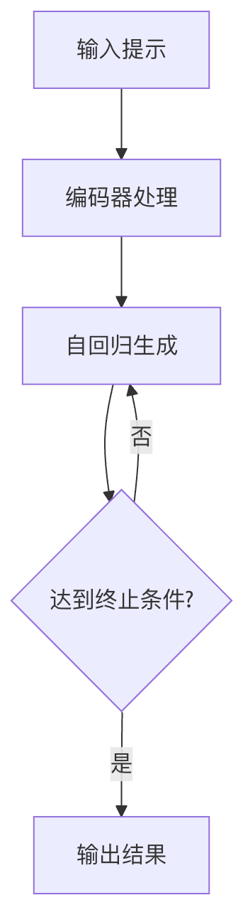

Generative Pre-trained Models
Generative pre-trained models are a class of deep learning models that acquire general language knowledge from text data through large-scale unsupervised learning and are capable of generating coherent and reasonable text. The core characteristics of such models are:
- Generation capability: Can automatically generate new text based on input (prompt or context).
- Pre-training + fine-tuning paradigm: First pre-train on large amounts of data, then fine-tune for specific tasks.
- Autoregressive or autoencoding architecture: Learns language patterns through different training objectives.

I. Development History of GPT Series Models
1.1 GPT-1: A Pioneering Starting Point
GPT-1 (Generative Pre-trained Transformer) was released by OpenAI in 2018, demonstrating for the first time the effectiveness of large-scale unsupervised pre-training plus supervised fine-tuning.
Core Features：
- 12-layer Transformer decoder architecture
- 117 million parameters
- Used the BooksCorpus dataset (approximately 7,000 books)
- Pioneered the two-stage paradigm of "pre-training + fine-tuning"
1.2 GPT-2: A Breakthrough in Scaling
GPT-2, released in 2019, demonstrated a positive correlation between model scale and performance.
Key Upgrades：
- Parameter scale: 1.5 billion (10 times that of GPT-1)
- Training data: WebText (8 million web pages, 40GB of text)
- Removed the fine-tuning stage, demonstrating zero-shot learning ability
- Introduced a longer context window (1024 tokens)
1.3 GPT-3: From Quantitative to Qualitative Change
GPT-3, launched in 2020, achieved few-shot learning capability, with a parameter scale of 175 billion.
Revolutionary Progress：
- Model architecture: 96-layer Transformer
- Training data: Common Crawl + curated datasets (approximately 570GB)
- Demonstrated strong in-context learning capability
- Achieved for the first time the ability to complete multiple NLP tasks without fine-tuning
1.4 GPT-4 and Subsequent Developments
GPT-4, released in 2023, further expanded the boundaries of model capabilities.
Latest Developments：
- Multimodal processing capability (text + images)
- Longer context memory (32k tokens)
- Enhanced reasoning and instruction-following capabilities
- Commercial API and plugin ecosystem
II. Principles of Autoregressive Language Models
2.1 Basic Concepts
Autoregressive language models predict the probability distribution of the next word based on the preceding context:
P(x_t | x_<t) = P(x_t | x_1, x_2, ..., x_{t-1})
2.2 Mathematical Principles
Given a word sequence x = (x₁, ..., xₙ), the joint probability is factorized as:
P(x) = ∏ P(x_t | x_<t)
Training uses maximum likelihood estimation:
L(θ) = ∑ log P(x_t | x_<t; θ)
2.3 Transformer Decoder Architecture
Key components:
- Masked self-attention: Prevents information leakage
# PyTorch 伪代码 attn_mask = torch.triu(torch.ones(seq_len, seq_len), diagonal=1)
- Positional encoding: Injects sequence order information
- Feed-forward network: Position-wise feature transformation
III. Detailed Explanation of Text Generation Techniques
3.1 Generation Process
Typical text generation process:

3.2 Comparison of Decoding Strategies
| Strategy | Temperature | Top-k | Top-p | Characteristics |
|---|---|---|---|---|
| Greedy search | - | - | - | High determinism but lacks diversity |
| Random sampling | Adjustable | Optional | Optional | Good creativity but may be incoherent |
| Beam Search | - | - | - | Balances quality and diversity |
3.3 Generation Control Parameters
Examples of key parameters:
Example
"max_length": 100, # Maximum generation length
"temperature": 0.7, # Controls randomness (0-1)
"top_k": 50, # Number of candidate tokens
"top_p": 0.9, # Nucleus sampling threshold
"repetition_penalty": 1.2 # Repetition penalty factor
}
IV. Basics of Prompt Engineering
4.1 Core Principles
- Clarity: Clearly express intent
- Context: Provide sufficient background information
- Structure: Use separators and formatting
- Example-driven: Include few-shot examples
4.2 Practical Tips
- Role setting：
You are a senior machine learning engineer, please explain in plain language...
- Step decomposition：
请按以下步骤解决问题： 1. 首先分析... 2. 然后计算... 3. 最后输出...
- Format specification：
请用JSON格式输出，包含字段：summary, keywords, confidence
4.3 Typical Patterns
- Instruction template：
任务：文本分类 输入：{text} 选项：positive, neutral, negative 输出： - **Chain of Thought (CoT)**:
Please reason step by step: First... Second... Therefore the conclusion is...
V. Practical Exercises
5.1 Basic Generation
Example
generator = pipeline('text-generation', model='gpt2')
prompt = "The Future Development of Artificial Intelligence"
output = generator(prompt, max_length=100)
print(output[0]['generated_text'])
5.2 Parameter Tuning Experiments
Design comparative experiments to observe the effects of different parameters:
- Fix the prompt, vary temperature (0.3 vs 0.7 vs 1.2)
- Compare the differences between top_k=10 and top_k=50
- Test the impact of different max_length on generation coherence
5.3 Prompt Optimization Challenge
Given a basic prompt:
Write an article about climate change.
Optimization directions:
- Add role setting
- Specify article structure
- Include keyword requirements
- Set style constraints
By systematically learning the development history of GPT models, autoregressive principles, generation techniques, and Prompt engineering, developers can better leverage the capabilities of modern large language models. It is recommended to start with simple prompts, gradually experiment with different generation parameters, observe changes in model behavior, and ultimately master the methodology of efficiently using generative AI.
Other Extensions